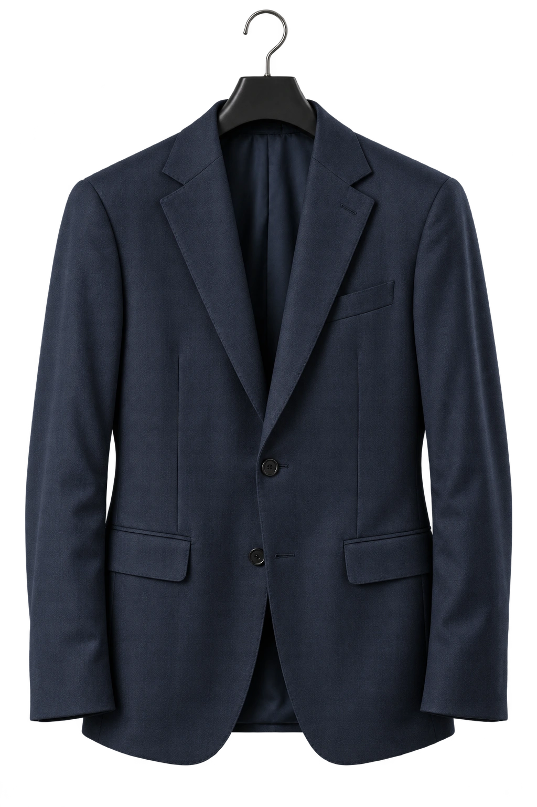
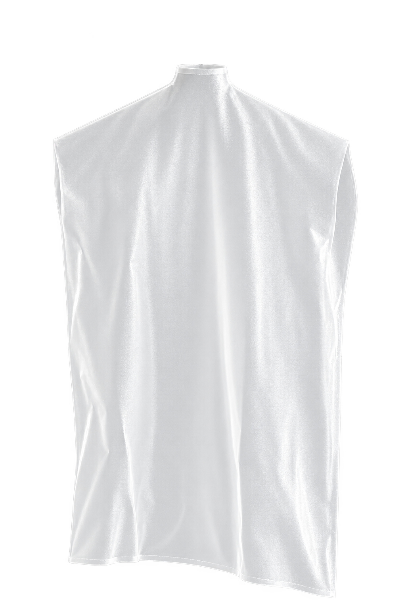

La cura prende
forma.
Il taglio sagomato segue la linea della spalla. Il gancio passa attraverso l’apertura superiore, mentre il film si dispone intorno alla gruccia e al capo.


Una protezione dedicata all’abbigliamento: il capo rimane pronto da appendere e da movimentare.
ProfiloSagomato o retto